This tutorial explains how to create 2 rooms, a door, and a teleport using
the Doom Builder map editor.
This tutorial assumes that you already have Doom Builder installed, configured
properly and running. More info about Doom Builder and its configuration can
be found on the Doom builder web site.
However, even if you're using a different editor, the concept of this tutorial
is still the same.
Let's get started.
First we need to examine our grid table. Like the grid, textures are usually laid out on grids in multiples of 8 unit pixels, for example 8, 16, 32, 64, 128, 256, and so on. Here's a visual:
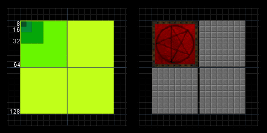Flat Texture
Doom editing has pretty much always been focused on an overhead or X,Y top view aspect. We had to imagine our wall heights without seeing the grid, of course until Doom Builder's 3d Mode came along. But as you can see the wall textures use the same grid rules as our floor and ceiling flat textures. Here's a 128x128 door texture. And a 64x64 panel texture from Doom.
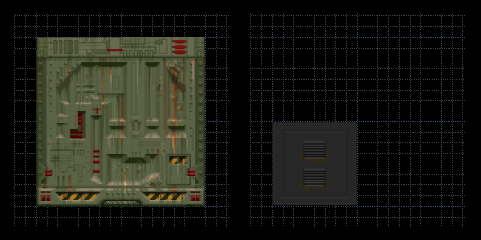Wall Texture
Now that you have a pretty good idea about the grid table, let's move along.
In Doom Builder, Select Lines Mode.
Now lets make a 256x256 Sector in the middle of our grid.
It's floor height will be 0 and it's ceiling height will be
128. This will be our first room.
Next, Select Things Mode, and slap a Player 1 start in there. It should look something like this:
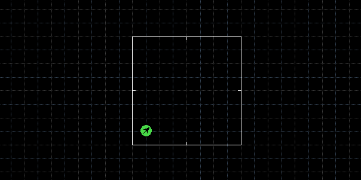
Now let's make another 256x256 Sector and a 32X128 Sector between them.
With the same floor and ceiling heights as before, 0 floor and 128 ceiling.
This will be our other room and the door between them. Now lets connect them, it should look something like this:
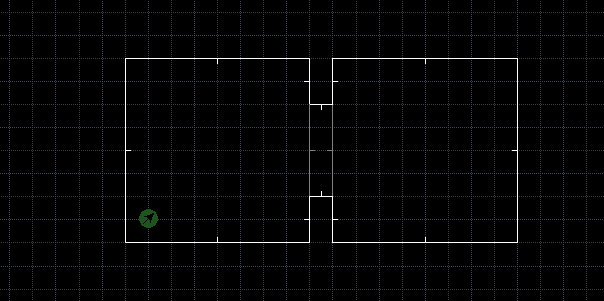
Now to get our door to activate:
Select Lines Mode.
Select both of the door face Linedefs and Flip them so they will be pointing outward,
this is done in Doom Builder by pressing the F key.
Now while the Linedefs are still selected, Right click and add Linedef Action
(114) and a Tag of 1.
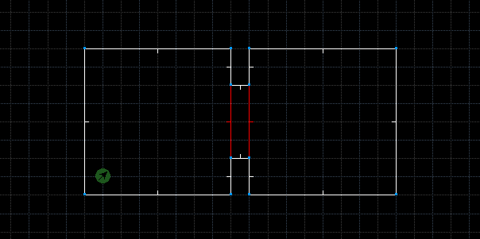
Now the door needs to be shut so our Linedefs will activate it
properly. Let's do that now.
Select Sectors Mode and Right click the door Sector.
Set its Ceiling height to 0 so the door will be shut.
Finally while the door Sector is still selected, give it a Tag of 1.
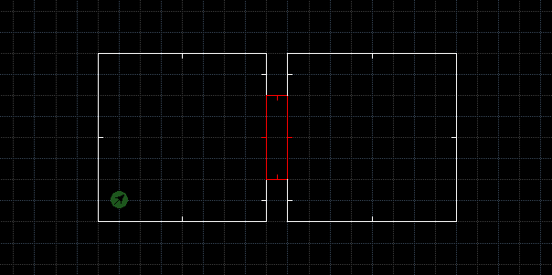
Now let's start applying textures to our walls and door.
Don't forget the Door track. :D
Speaking of door tracks, as it is, the door track textures
will move. It's a personal preference but if you would like for them not to
move, in Lines Mode select both door tracks and then Right
click them, in the Flags area check the box: Lower
Unpegged. Now those textures won't move anymore.
Sometimes it helps to change the lighting a bit in different areas of a map. I made one of my rooms a little brighter than the other. After texturing, we should probably stop and test out our map. Have a go and make sure our door is working. ;)
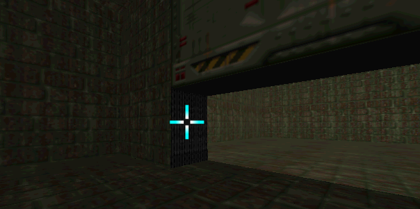
Hey it works! But it's kind of boring, let's put a teleport in there to make things a bit more interesting.
Select Lines Mode and draw a 64x64 unit Sector in our second room. Orientate the Sector so it fits in a 64x grid rule. This way our texture flat won't look out of place. Next Flip the Linedefs outward by pressing F, like we did with our door. While the Linedefs are still selected, Right click them and add Linedef Action (97) and give them a Tag of 2.
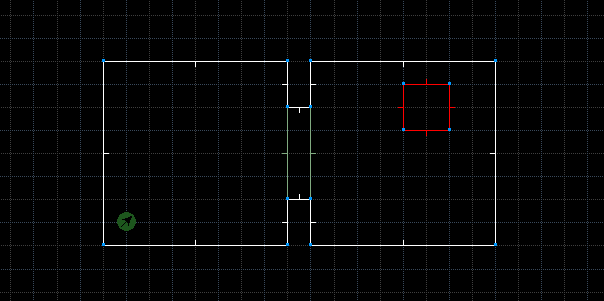
Now that we have our first teleport made, we need to make a destination teleport.
Let's draw a small room in and connect it to our first room. Make a 128x128 Sector and connect it to the room. It's always fun to teleport to a higher area in a map, so lets change the little rooms floor height to 64. Now lets draw our other teleport in, draw a 64x64 unit Sector into the little room. Next and again, Flip its Linedefs by press F. Now go into Sectors Mode, and Right click the new teleport sector in the little room, and give it a Tag of 2.
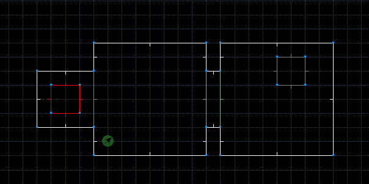
Now we should probably go ahead and apply some textures to our new structures in the map. Let's do that now. Add your teleport Texture Flats in, and hey don't forget to apply the Wall Texture for the new little room.
Now we are almost ready to test out our teleport, but first! We need to add a Teleport Destination Thing type. Let's do that now. Select Things Mode and add a Teleport Destination. It should look like this:
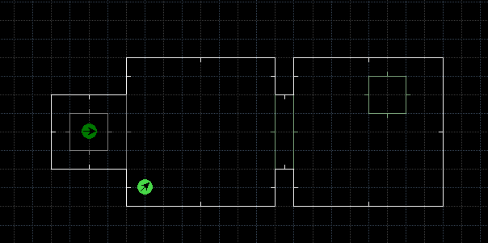
Ok now we're ready to go in-game and test it out.
Nice! it works perfectly. But it's missing something, that teleport needs to have a reason to be there. Let's give it a reason, lets put a crate in there with an item to pick up!
Select Lines Mode and draw a 64x64 unit Sector in your first room and place it in front of the destination teleport. Now go into Sectors Mode and Right click on the crate Sector. Set its sector Floor height to 64. Don't forget to texture it in! Good, now lets place something on top of it. I put an Invisibility sphere on mine. :P
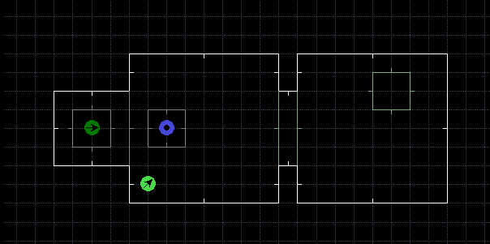
Sweet, the teleport now has a reason behind it. But lets say we want to walk back into the teleport after we pickup our item. Let's do that now.
Select the 4 Linedefs of our current destination teleport. Now like the first one, Right click the lines and add Linedef Action (97), and give them a Tag of 3. Now, go into Sector Mode and select our first teleport sector, Right click and give it a Tag of 3.
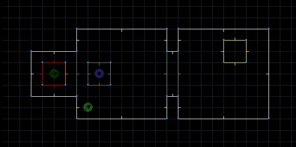
Finally, put a Teleport Destination Thing type in our first teleport. Run the map and try it out!
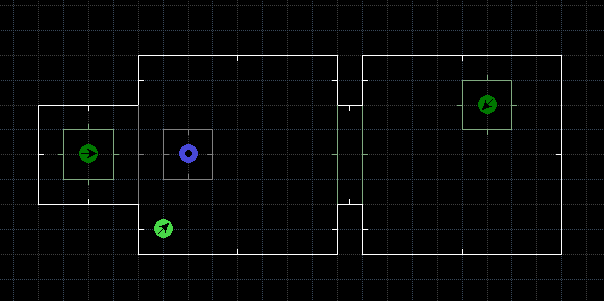
Excellent work!
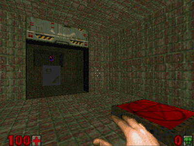
You have learned how to make 2 rooms connected by a door, and 2 teleports, each with their own destination!
Here is the tutorial Demo.wad.
You are now on your way to using more advanced editing features.
See the Doom Legacy Editing Guide for more details!